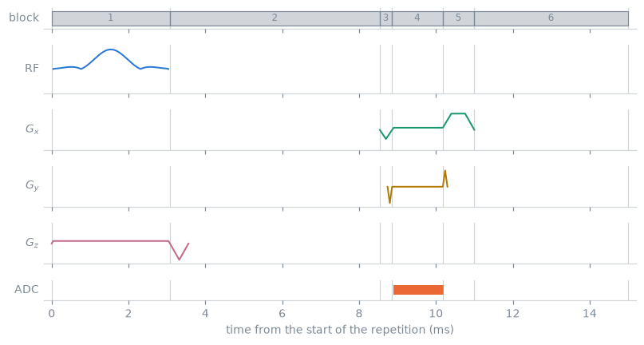
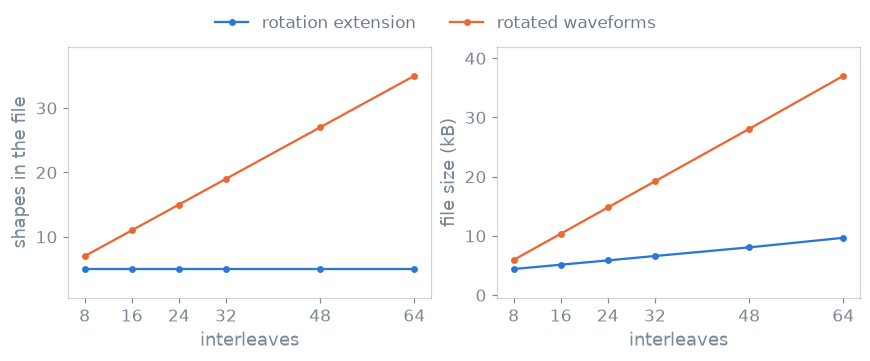
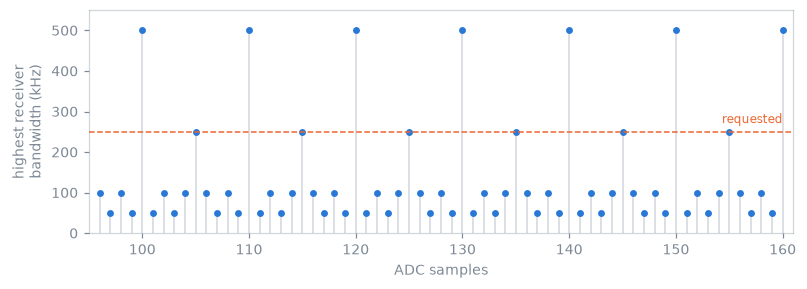

Pulseq file format internals#
What a .seq file holds, how pypulseqpp stores, deduplicates and writes it,
and how event times are quantized. The concepts are in
Pulseq file format.
Pulseq is an open file format for MR pulse
sequences. A .seq file specifies event timing and channel assignment for a
complete, portable acquisition. The authoritative definition is the Pulseq
specification and the MATLAB
reference implementation; in the tests, pypulseq-matlab-like is the file
authority and upstream PyPulseq the Python API reference.
Sections of a text file#
Section |
Holds |
|---|---|
|
The format revision, as |
|
Named values: the four rasters event times are quantized to ( |
|
One row per block: its duration in units of the block-duration raster, an event id per channel, and an extension id. |
|
The event libraries. |
|
The extension chains and their typed rows. |
|
The compressed sample arrays of RF and gradient shapes. |
|
An optional digest of the file above it. |
Blocks#
A sequence is an ordered list of blocks. A block has a duration and at most one
event per channel: one RF pulse, one gradient on each of x, y and z, one
ADC window, and a chain of extensions.
The events of a block are played concurrently, each with its own delay from the start of the block.
Blocks are played back to back, with no gap between them.
The file contains a flattened event schedule without loops, branches or nested blocks. Scan-loop control exists only in the authoring program.
A block whose duration exceeds the extent of its events is a delay, and this is how a repetition time is realized. A two-dimensional gradient-echo repetition is six blocks: the pulse with its slice-selection gradient, an echo-time delay carrying the slice rephaser, the prewinders, the readout gradient with its ADC, the spoilers, and a delay that completes the repetition time. Which of the middle blocks carries the wait is a design choice; that the wait is a block duration rather than a field of its own is the format.

One repetition of a two-dimensional gradient echo, over its six blocks, numbered in the order just listed. Blocks 2 and 6 last longer than their events, and that difference is the echo time and the repetition time.#
Event libraries#
Events are stored in libraries and referenced from the block table by integer id, so an event played ten thousand times is stored once:
[BLOCKS]
# NUM DUR RF GX GY GZ ADC EXT
1 694 1 0 0 1 0 2
2 356 0 2 3 4 0 0
3 268 0 5 0 0 1 0
A zero means the block has no event on that channel. Block and library indices are 1-based. The block table of a written file refers to events by id, and the events refer to shapes by id.
- RF
An amplitude in Hz, ids into a magnitude, a phase and optionally a time shape, a delay, frequency and phase offsets, a centre time, and a
use: excitation, refocusing, inversion, saturation or preparation. Theuseidentifies which pulses begin a shot and which refocus one, which is why the pulse factories such asmake_slr_pulse()accept it and whyrf_times()can report the two separately.- Gradients
Two kinds share one column. A trapezoid is an amplitude with rise, flat and fall times. An arbitrary gradient is a shape id, with an optional time shape when the samples do not fall on the gradient raster, and endpoint amplitudes. The two occupy separate tables and share the file’s id space.
- ADC
A sample count, a dwell time, a delay, frequency and phase offsets, and an optional per-sample phase modulation.
- Shapes
Sample arrays, compressed by a run-length encoding of their derivative, so a linear ramp of a thousand samples is stored as three numbers. A shape is stored normalized; the amplitude that scales it belongs to the event, not to the samples.
Units#
Amplitudes are in Hz for RF and Hz/m for gradients rather than in tesla and
tesla per metre. The same file therefore means the same thing on any nucleus a
scanner is tuned to, and the gyromagnetic ratio enters only where a physical
amplitude is required. Converting a reported amplitude from Hz/m to mT/m means
dividing by the gyromagnetic ratio in Hz/T, which Opts
holds as gamma, and multiplying by 1000. The constraint checks report their
values in the file’s units and convert with that constant.
Extensions#
Each block’s EXT id refers to a linked list of typed rows.
LABELSETandLABELINCCounters and flags. The counters (
LIN,PAR,SLC,ECO,REP,AVG,SET,SEG,PHS,ACQ) are the encoding indices a reconstruction sorts the acquisition by; the flags (NAV,REV,IMA,NOISE,REF, …) state what an acquisition is for. Label values are sticky: a value set on one block remains in force until it is set or incremented again, so the file contains one row where a counter changes rather than one row per block.evaluate_labels()evaluates the block table in order and returns the running values.ROTATIONSA quaternion that rotates the block’s gradients from its channel axes onto its logical axes. A prescription rotation is composed after it, and
TransformFOVwrites the product into the same extension.TRIGGERSWait on, or emit, a hardware signal.
RF_SHIMSPer-transmit-channel magnitude and phase, for parallel transmission.
SOFT_DELAYA delay whose duration is adjusted at the console without rewriting the file.
Builtin label ids follow the reference order. Names beyond that table are
stored in the CustomLabels definition in assignment order; no custom section
is added.
Definitions and instances#
An event is stored as a fixed definition together with a set of instances. The definition holds the timing and shape data that does not vary between playouts; each instance holds the playout parameters.
A phase-encode gradient scaled per line is one definition and one instance per line: the shape and the timing are identical and only the amplitude differs. An arbitrary gradient is defined by its time shape and its delay, and its waveform belongs to the instance, so arbitrary gradients that share a time base and a delay share one definition even where their waveforms differ. For RF events, the magnitude, phase and time shapes belong to the definition; frequency offset, phase offset and amplitude belong to the instance. ADC and extension choices do not distinguish block definitions. Pure delays share one definition independent of duration; triggers and digital outputs are not pure delays.
Registration creates definitions. Deduplication rebuilds them after renumbering shapes and events, so definition IDs are not stable across it. Before deduplication, equal separately registered shapes can yield distinct definitions. Shape roles are a bit mask recorded when events reference a shape; deduplication ORs the roles of merged shapes.
Repetition#
A file has no loop, so the repetition a design script played in a loop is not
recorded in it; repetition() recovers it from the
block table. It returns (size, start): the number of blocks per repetition
and the 1-based block the first repetition starts at, which is always 1. The
period is found in three steps:
the shortest period of the block-definition stream from the first block that every later block repeats, the last copy possibly cut short;
failing that, the shortest period dividing the block table over which blocks match in duration and in the channels they play;
failing both, the whole sequence, which is then one repetition.
A phase encode changes an instance and not its definition, so the lines of a
Cartesian acquisition are repetitions of one period. A slice acquired with its
own preparation and dummy shots is one repetition, and a block played once
makes the whole sequence one. A TRSize definition shorter than the sequence,
over which the blocks repeat, takes precedence, so a longer period can be
declared. The method writes nothing into the sequence. The SAR check averages
over the repetitions it reports. What a repetition means for scanner execution
is described in pulserver’s scanner
representation.
Deduplication#
Two sequences with identical playout can differ substantially in file size,
because nothing in the format forces equal events to share a library entry.
write() merges equal shapes and equal events of a
copy, renumbers the copy’s block table and writes the copy, leaving the
sequence’s own libraries unchanged. remove_duplicates()
with in_place=True, and read() by default, renumber
the sequence itself.
Registration ids are local to a sequence and are not stable across deduplication. Code that registers an event and retains its id must not assume the id survives an in-place deduplication, or that it equals the id the event has in a written file. Block numbering may close gaps in reference files.
Rotation extensions and the size of the shape library#
A non-Cartesian acquisition plays the same readout at many orientations.
Materializing each orientation writes a separate gradient waveform per shot, so
the shape library grows in proportion to the number of shots. Referring to one
interleaf and attaching a ROTATIONS extension per block writes the waveform
once, and the per-shot cost is one quaternion.

The same spiral acquisition written both ways, at interleaf counts from 8 to 64. A rotation extension per block leaves the shape library the size of one interleaf; a rotated waveform per shot adds a pair of shapes each time, except where a rotation carries one axis onto another and the two files deduplicate as they are written.#
A radial, spiral, PROPELLER or stack-of-stars acquisition designed the second way has a shape library the size of a single repetition, whatever the number of shots, while its block count and its rotation-row count grow with the scan. This is a property of the representation rather than of the trajectory: a zero-echo-time acquisition, whose readout gradient is held across a shell and stepped between views rather than rotated as a fixed interleaf, has a shape library that grows with the view count.
Any quantity evaluated on played gradient waveforms must apply the block rotation first; the constraint checks do.
Definitions, chains and the signature#
[DEFINITIONS] is free-form key/value metadata. A few keys are conventional:
FOV, Name, the raster times and TotalDuration. The rest are chosen by
whoever writes the file. The shipped sequences record the prescription and the
k-space geometry a reconstruction requires: the matrix size, the echo and
repetition times, the index of the k-space centre line and sample, and the
slice positions.
NextSequence links files into a chain. A calibration prescan and the imaging
scan it belongs to are two files played in order rather than one file with a
mode flag, which write() produces from a list of
sequences, the prescans first, and which keeps each file a single repeating
unit.
[SIGNATURE] closes the file with an MD5 digest of everything above it, so a
reader can establish that the file is the one that was written.
Out-of-format information#
The format states the playout order and nothing above it. Nothing in the file
identifies which run of blocks is a repetition, which events belong to one
shot, or which acquisitions form a calibration region. A consumer that requires
that structure derives it from the content, as
repetition() does; the shipped sequences record their
encoding indices as labels rather than leaving a consumer to infer them.
The same applies to the system a sequence was designed against. A file records
the four rasters; it records a gradient amplitude limit, a slew-rate limit or a
field strength only where the writer adds the MaxGrad, MaxSlew or B0
definition, and it records no dead times.
read() takes the rasters from the file and keeps the
system the sequence was constructed with. pypulseqpp.io.read() builds the
system from the file instead, so the design helpers and the checks apply limits
derived from the file rather than those of the shared default system.
Revisions#
Parse complete files before registering libraries and then blocks; text and binary share one builder. Default writers declare Pulseq 1.5.1.
Revision 1.4.1, which write_v141() produces, has no
column for an RF centre time or use, no gradient endpoint amplitudes and no
ppm offsets. The writer folds a ppm offset into an absolute offset using the
gyromagnetic ratio in Hz/T and the field strength in tesla, warns when it omits
a soft delay, and rejects a sequence containing rotation or RF-shim extensions,
which that revision cannot express.
Reading accepts earlier revisions. Legacy text conversion derives the RF centre
times, gradient endpoint amplitudes and pre-1.4 block durations the file does
not state; an RF use that is absent remains undefined unless inference is
requested. Pre-1.4 shapes require forced decoding before re-encoding, because
equal encoded and sample counts are ambiguous.
Binary form#
write_binary() holds the same content in a different
encoding. Records are little-endian, times are integer picoseconds and shape
samples are float32. Definition names and value counts use int32 lengths. Both
forms support an optional MD5 signature. check_timing, not writing alone,
records TotalDuration.
Rasters#
[DEFINITIONS] declares four raster periods, and each class of time is
quantized to one of them:
Raster |
Quantizes |
|---|---|
RF raster |
RF waveform sample spacing, RF event delays and centre times |
Gradient raster |
arbitrary-gradient sample spacing, gradient delays, trapezoid rise, flat and fall times |
ADC raster |
ADC dwell time and the ADC event delay |
Block-duration raster |
the duration of every block |
Opts holds all four. The defaults are 2 µs for the RF and
ADC rasters and 20 µs for the gradient and block-duration rasters, but they are
properties of the system the sequence is designed against, and a file records
the values it was written with. round_to_raster() and
ceil_to_raster() quantize a single interval; rounding up
rather than to nearest is the usual choice for a delay that must not fall below
a computed minimum.
The duration recorded for a block is independent of the extent of its events,
subject to being at least as long. The difference is dead time on every
channel. A block longer than its events is legal and silent: no check reports
it, because it is a delay. A gradient that ends at a nonzero amplitude before
its block ends is not silent, because the amplitude over the remaining interval
is undefined; check_timing reports it as GRADIENT_END_NONZERO.
Coupling between the ADC and gradient rasters#
An acquisition window is num_samples * dwell long. The dwell is quantized to
the ADC raster, and the readout gradient’s flat top is quantized to the
gradient raster. Whenever the samples must be taken at constant gradient
amplitude the window has to coincide with the flat top, and both conditions
apply at once.
Write \(a\) for the ADC raster, \(g\) for the gradient raster and \(r = g / a\), an integer for any realistic pair. Admissible dwell times are the multiples \(d = k a\) for which \(N d\) is a multiple of \(g\), and the smallest is
At the default rasters (\(a = 2\ \mu\mathrm{s}\), \(g = 20\ \mu\mathrm{s}\), \(r = 10\)), a readout of 128 samples has \(\gcd(128, 10) = 2\) and admits no dwell shorter than 10 µs, a receiver bandwidth of 100 kHz; a readout of 100 samples has \(\gcd(100, 10) = 10\) and admits 2 µs, a bandwidth of 500 kHz. A request for 250 kHz is met in the second case and not in the first.

The highest receiver bandwidth each sample count admits at the default rasters, over one range of readout lengths. The four levels are the four values \(\gcd(N, r)\) takes for \(r = 10\), and a request is met only where the ceiling reaches it.#
calc_adc_timing() performs this search and returns the dwell
together with the acquisition duration, so the achieved bandwidth is
1 / dwell and may be lower than the one requested. The readout modules report
what they achieved as bandwidth_hz rather than echoing the request.
Dead times, ringdown and the timing check#
Three intervals in Opts state the settling times of the
transmit and receive chains: rf_dead_time before a pulse, rf_ringdown_time
after it, and adc_dead_time after an acquisition window. None of the three is
a quantization constraint, so a sequence can satisfy every raster and still
violate them.
check_timing reports both classes. Raster violations appear as RASTER;
chain violations appear as RF_DEAD_TIME, RF_RINGDOWN_TIME, ADC_DEAD_TIME
and POST_ADC_DEAD_TIME. The same pass also reports BLOCK_DURATION_MISMATCH,
NEGATIVE_DELAY, GRADIENT_START_DELAY, GRADIENT_END_NONZERO, the
soft-delay consistency conditions, and ADC_SAMPLES_DIVISOR where a vendor
requires the sample count to be divisible by a fixed factor.
It also applies three conditions that are not timing in the raster sense. It
runs check_grad_continuity() and reports a boundary
step beyond the one-raster slew criterion as GRADIENT_DISCONTINUITY, and a
sequence that does not end at zero gradient amplitude as
GRADIENT_NOT_RAMPED_DOWN. When the system limits carry a positive
max_freq_offset attribute (Hz), which Opts does not set
by default, it reports an RF or ADC event whose frequency offset in Hz, ppm
offset converted with gamma and B0, or their sum exceeds that limit as
FREQ_OFFSET. It records the played duration as the TotalDuration
definition when the sequence has none, and otherwise reports a recorded value
that differs from the sum of the block durations by more than 1 ns as
TOTAL_DURATION_MISMATCH.
A sequence whose gradient waveforms are within every amplitude and slew limit
can still be unplayable because one delay is off the raster. The constraint
checks and check_timing establish different properties and are separate
calls.